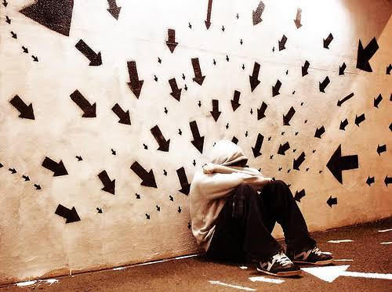
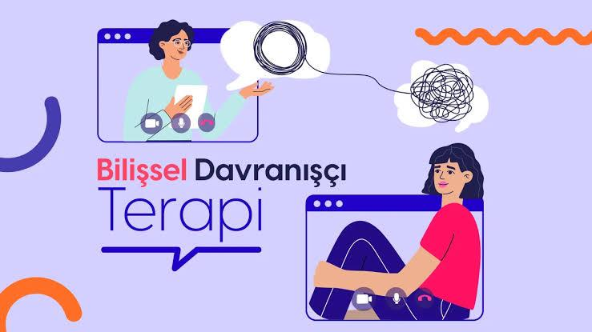

Daha İyi Hissetmeye
Bugünden Başlayın
Zorluklarınızla başa çıkmanıza, kendinizi keşfetmenize ve daha anlamlı bir yaşam sürmenize yardımcı olmak için buradayım.

Terapötik Yolculuğunuzda Güvenilir Rehberiniz
Sizi anlayan, destekleyen ve hedeflerinize ulaşmanız için size alan açan bir yaklaşımla tanışın.

Psikolog Onur Uslu
Selçuk Üniversitesi Psikoloji lisans bölümünden onur derecesi ile mezun oldum. 2 yıllık deneyimim boyunca birçok danışanıma hizmet verdim. Psikoloji alanındaki bilgi birikimimi Prof. Dr. Mehmet Hakan Türkçapar ve ekibinden aldığım Bilişsel Davranışçı Terapi eğitimi ile pekiştirdim. Aynı zamanda bilinçli farkındalık temelli terapi ve oyun terapisi eğitimleri almış biri olarak bu alanlarda yetkinliğim bulunmaktadır. Eğitim hayatım boyunca rehber klinik, gebze huzurevi müdürlüğü ve eser psikolojik danışmanlık merkezinde staj süreçlerimi gerçekleştirdim. Yetişkin ve ergen bireylere odaklanarak Bilişsel Davranışçı Terapi ekolü bağlamında onlara destek sağlıyorum. Birlikte çalışarak yaşadığınız sorunlar hakkında yardımcı olmak ve sizlere daha iyi bir hayat kalitesi sunmayı isterim.
Danışanlarımla birlikte, düşünce kalıplarını, duygusal tepkileri ve davranışları anlamlandırarak daha sağlıklı başa çıkma mekanizmaları geliştiriyoruz.
Çalışma alanlarım: Depresyon (Prof. Dr. Kadir Özdel) - Panik bozukluk ve agorafobi (Prof. Dr. Hakan Türkçapar) - Anksiyete bozuklukları (Prof. Dr. Ercan Altınöz) - Travma sonrası stres bozukluğu TSSB (Prof. Dr. Aslıhan Dönmez) - Somatoform ve Sağlık kaygısı bozukluğu (Prof .Dr. Selçuk Aslan) - Obsesif Kompulsif Bozukluk OKB (Hakan Türkçapar) - İlişki problemleri ve duygu düzenleme becerileri.
Güven
Şeffaflık ve profesyonellik üzerine kurulu bir ilişki.
Empati
Yargılamadan dinleyen, anlayan bir yaklaşım.
Gizlilik
Tüm bilgilerinizin güvende olduğu bir ortam.
Size Nasıl Yardımcı Olabilirim?
Farklı ihtiyaçlara yönelik olarak tasarlanmış terapi hizmetlerimle yanınızdayım. Her biri özel olarak geliştirilmiş yaklaşımlarla.
Bireysel Terapi
Kaygı, depresyon, stres, özgüven sorunları ve kişisel gelişim hedefleriniz için bire bir destek.
Çift Terapisi
İlişkinizdeki iletişim sorunlarını çözmek, çatışmaları yönetmek ve bağınızı güçlendirmek için.
Online Terapi
Konforlu bir ortamdan, coğrafi sınırlamalar olmadan terapi hizmeti alın.
Danışanlarım Ne Diyor?
Terapi sürecimizden memnun kalan danışanlarımın deneyimleri.
"Hayatımın her şeyin dağıldığı bir dönemde başladım ve gerçekten çok iyi psikologları olan bir yer. Kendini keşfetme yolculuğumda bana yardımcı olan Onur Bey'e teşekkür etmek istiyorum."
"Onur Bey ile tanışmak benim için bir dönüm noktası oldu. Kendini keşfetme sürecimde acılarımla ilerlediğim bu yolda onun desteğini hissetmek gerçekten harika bir duygu."
"Onur Bey'in yaklaşımı çok profesyonel ve etkili. Kaygı bozukluğumla başa çıkmamda bana çok yardımcı oldu. Bazen duygularımı benden daha iyi anlıyor gibi hissediyorum."
"Çift terapisi sürecimiz sayesinde eşimle olan iletişimimiz çok gelişti. Onur Bey'in sabırlı ve anlayışlı yaklaşımı sayesinde ilişkimizi yeniden inşa ettik."
Blog & Makaleler
Psikoloji dünyasından güncel bilgiler, ipuçları ve içgörüler.

Kaygıyla Başa Çıkmanın 5 Pratik Yolu
Günlük hayatta anksiyete ile başa çıkmanıza yardımcı olacak basit ve etkili teknikler...
Devamını Oku →Kaygıyla Başa Çıkmanın 5 Pratik Yolu
Kaygı, günlük yaşamın bir parçası olabilir, ancak onunla başa çıkmak için etkili yöntemler geliştirmek önemlidir. İşte size yardımcı olabilecek 5 pratik yol:
- Derin Nefes Alın: Kaygı anında derin nefes almak, vücudunuzu sakinleştirir ve zihninizi rahatlatır. Burnunuzdan derin bir nefes alın, birkaç saniye tutun ve yavaşça ağzınızdan verin.
- Fiziksel Aktivite: Egzersiz yapmak, stres hormonlarını azaltır ve mutluluk hormonlarını artırır. Günlük yürüyüşler veya yoga gibi aktiviteler kaygıyı hafifletmek için harikadır.
- Zihinsel Farkındalık: Mindfulness veya meditasyon teknikleri, anı yaşamanıza ve kaygıyı azaltmanıza yardımcı olabilir. Günlük 10 dakikalık bir meditasyon rutini oluşturabilirsiniz.
- Destek Alın: Kaygıyla başa çıkmakta zorlanıyorsanız, bir terapistten veya danışmandan destek almak önemlidir. Profesyonel yardım, kaygıyı yönetmek için etkili stratejiler sunabilir.
- Sağlıklı Alışkanlıklar: Yeterli uyku almak, dengeli beslenmek ve kafein tüketimini sınırlamak, kaygıyı azaltmada önemli bir rol oynar.
Unutmayın, kaygı ile başa çıkmak bir süreçtir ve her birey için farklı yöntemler etkili olabilir. Kendinize zaman tanıyın ve ihtiyaç duyduğunuzda destek istemekten çekinmeyin.
Bilişsel Davranışçı Terapi (BDT): Zihinsel Esenliğe Giden Bilimsel Yolculuk
Kendinize ve ilişkinize duyduğunuz saygıyı artırmak için sınırlar neden önemlidir ve nasıl konulur...
Devamını Oku →Kendinize ve İlişkinize Duyduğunuz Saygının Temeli: Sınırlar Neden Önemlidir ve Nasıl Konulur?
Kişisel sınırları, evinizin etrafındaki bir çit gibi düşünebilirsiniz. Bu çit, neyin size ait olduğunu (duygularınız, zamanınız, enerjiniz) ve neyin başkalarına ait olduğunu belirler. Kimi ve neyi içeri alacağınıza siz karar verirsiniz. Sağlıklı sınırlar, ne "evet" diyeceğinizi bildiğiniz kadar, neye ve ne zaman "hayır" diyeceğinizi bilmektir.
Sınırlar Neden Bu Kadar Önemlidir?
Sınırlar, bencillik veya başkalarını dışlamak anlamına gelmez. Aksine, hem kendinize hem de ilişkilerinize duyduğunuz saygının en net göstergesidir.
1. Kendinize Duyduğunuz Saygı İçin:
- Öz-Değeri Korur: Sınır koymak, "Benim ihtiyaçlarım, duygularım ve zamanım değerlidir" demenin en somut yoludur.
- Tükenmişliği Önler: Enerjinizi nerede harcayacağınızı kontrol etmenizi sağlar ve zihinsel tükenmişliği önler.
- Öfke ve Kırgınlığı Azaltır: Sınırlar, öfke ve kırgınlık birikimini önler.
- Otonomi Sağlar: Kendi hayatınızın kontrolünün sizde olduğunu hissettirir.
2. İlişkilerinize Duyduğunuz Saygı İçin:
- Beklentileri Netleştirir: Yanlış anlaşılmaları ve hayal kırıklıklarını azaltır.
- Güveni Artırır: Sınırlarınıza sadık kaldığınızda, insanlar sizin tutarlı olduğunuzu anlar.
- Bağımlılığı Değil, Sağlıklı Bağlılığı Teşvik Eder: Herkesin bireyselliğini korumasına olanak tanır.
- İnsanlara Size Nasıl Davranacaklarını Öğretir: Sınırlarınız, başkaları için bir kullanım kılavuzu gibidir.
Sağlıklı Sınırlar Nasıl Konulur?
- Kendinizi Tanıyın ve İhtiyaçlarınızı Belirleyin: Hangi durumlarda rahatsız hissediyorsunuz? Fiziksel, duygusal ve zihinsel sınırlarınızı düşünün.
- Açık, Net ve Nazik Olun: İhtiyacınızı doğrudan ifade edin. "Ben Dili" kullanarak yapıcı bir iletişim kurun.
- Küçük Adımlarla Başlayın: Güvendiğiniz bir yakınınızla pratik yaparak başlayın.
- Tutarlı Olun: Sınırların işe yaraması için tutarlılık şarttır.
- Tepkilere Hazırlıklı Olun: İnsanlar şaşırabilir veya suçluluk hissettirebilir. Sakin ve kararlı kalın.
- Suçluluk Hissinin Normal Olduğunu Kabul Edin: Kendi ihtiyaçlarınızı gözetmek bencillik değil, öz-bakımdır.
BDT (Bilişsel Davranışçı Terapi) ve Sınırlar
BDT, düşüncelerimizin duygularımızı ve davranışlarımızı nasıl etkilediğine odaklanır. Sınır koymakta zorlanan insanların altında genellikle işlevsiz düşünce kalıpları ve temel inançlar yatar.
- Otomatik Düşünceleri Belirleme: Sınır koymayı düşündüğünüzde aklınıza gelen olumsuz düşünceleri fark edin.
- Temel İnançlara Meydan Okuma: Sağlıksız temel inançları sorgulayarak daha gerçekçi olanlarla değiştirin.
- Davranışsal Deneyler: Küçük adımlarla sınır koymayı deneyin ve sonuçları gözlemleyin.

Şema Terapi Nedir?
Hayatınızda tekrar eden olumsuz kalıpların kökenlerini anlamak ve değiştirmek için güçlü bir yaklaşım...
Devamını Oku →Şema Terapi Nedir?
Şema terapi, hayatınızda tekrar eden olumsuz kalıpların kökenlerini anlamak ve değiştirmek için güçlü bir psikoterapi yaklaşımıdır...
Şema Terapinin Temel İlkeleri
- Şemalar: Çocukluk döneminde oluşan, bireyin kendisi, diğer insanlar ve dünya hakkındaki temel inançlarıdır. Örneğin, "Ben yetersizim" veya "Kimseye güvenemem" gibi düşünceler birer şemadır.
- Şema Modları: Şemaların aktif hale geldiği durumlarda bireyin sergilediği davranış ve duygusal tepkilerdir. Örneğin, öfke patlamaları veya aşırı çekingenlik.
- Şema Terapinin Amacı: Olumsuz şemaları fark etmek, bunların kökenlerini anlamak ve daha sağlıklı düşünce ve davranış kalıpları geliştirmektir.
Şema Terapinin Kullanım Alanları
Şema terapi, özellikle aşağıdaki durumlarda etkili bir şekilde kullanılabilir:
- İlişki sorunları
- Özgüven eksikliği
- Travma sonrası stres bozukluğu
- Obsesif kompulsif bozukluk (OKB)
- Depresyon ve anksiyete
Şema Terapide Kullanılan Teknikler
- Şema Aktivasyon Çalışmaları: Bireyin şemalarını tetikleyen durumları belirlemek ve bu durumlara verdiği tepkileri incelemek.
- Görselleştirme Teknikleri: Çocukluk anılarına dönerek şemaların kökenlerini anlamaya çalışmak.
- Davranışsal Deneyler: Yeni ve sağlıklı davranış kalıplarını denemek ve sonuçlarını gözlemlemek.
- Reparenting (Yeniden Ebeveynlik): Terapistin, bireyin çocuklukta ihtiyaç duyduğu ancak alamadığı duygusal desteği sağlaması.
Şema terapi, bireyin kendini daha iyi anlamasına ve daha sağlıklı ilişkiler kurmasına yardımcı olan etkili bir yöntemdir. Bu süreçte, birey geçmişteki olumsuz deneyimlerin etkilerini azaltarak daha tatmin edici bir yaşam sürdürebilir.
İletişime Geçin ve Randevu Alın
İlk adımı atmak için hazırsanız, size yardımcı olmaktan memnuniyet duyarım. Aşağıdaki formu doldurabilir veya doğrudan benimle iletişime geçebilirsiniz.
Veya doğrudan ulaşın:
psikologonuruslu@gmail.com